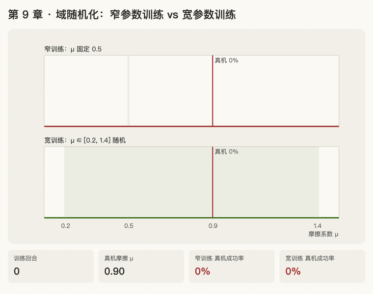

第 9 章 · 仿真、数据与部署闭环
本章回答：机器人在"不开机"的时候需要哪些基础设施？仿真器怎么选？sim2real 差距从哪来、怎么缩小？遥操作数据怎么采、怎么存？模型怎么部署到机上、怎么持续迭代？
编写日期：2026-11-04 · 上一章：第 8 章 自主栈 · 下一章：第 10 章 安全与整机案例 · 总览：00-overview.md
对应原文：本地论文文本vla-deep-dive/materials/text/papers/：act-aloha-2304.13705.txtL169（ALOHA 遥操作与录制 50 Hz）；open-x-embodiment-2310.08864.txtL295（RLDS 数据格式）；lapa-2410.11758.txt（人类视频隐动作预训练）。域随机化论文（Tobin 2017、Peng 2018）不在本地
本章缩写：BC = Behavior Cloning（行为 / 克隆）；RL（第 6 章）；VLA（第 1 章）；sim2real（第 6 章）；MJX = MuJoCo XLA（XLA = Accelerated Linear Algebra：加速 / 线性代数，MuJoCo 的 JAX 版）；SAPIEN = SimulAted Part-based Interactive ENvironment（基于部件的交互仿真环境）；CAD = Computer-Aided Design（计算机 / 辅助 / 设计）；VR = Virtual Reality（虚拟 / 现实）；ALOHA（第 5 章）；GELLO：Wu et al. 2023 的低成本主从臂遥操作框架名（论文标题 GELLO: A General, Low-Cost, and Intuitive Teleoperation Framework）；UMI = Universal Manipulation Interface（通用 / 操作 / 接口）；LAPA = Latent Action Pretraining from Videos（从视频做隐动作预训练）；RLDS = Reinforcement Learning Datasets（强化学习数据集格式）；TFDS = TensorFlow Datasets；HDF5 = Hierarchical Data Format 5（层级 / 数据 / 格式第 5 版）；ACT = Action Chunking with Transformers（用 Transformer 做动作分块）；ONNX = Open Neural Network Exchange（开放 / 神经网络 / 交换格式）；FP16 = 16-bit Floating Point（16 位浮点）；INT8 / FP4（第 5 章）；KV cache = Key–Value cache（键 / 值缓存）；OTA（第 5 章）；\(\xi\) 读 xi（物理参数），\(J(\pi;\xi)\)：策略 π 在参数 ξ 下的回报。全部缩写见 附录 · 缩写与术语表
讲解
第 1 步：机器人软件的另一半在机器之外
白话类比：飞行员训练。飞行员先在模拟器里练几百小时（仿真），再跟教员上真飞机（遥操作示范），每次飞完看黑匣子复盘（日志），航空公司统一给所有飞机升级软件（OTA）。
┌──→ 仿真（训练 RL、测试回归、生成数据）
│ │
│ ▼
│ 训练集群（BC / RL / VLA 微调）──→ 评测（仿真基准 + 真机固定任务）
│ │
│ ▼
│ 部署（量化、TensorRT、OTA 推送）
│ │
│ ▼
└── 数据回流 ←── 真机运行日志 + 失败片段 + 人工干预 ←── 遥操作采集
这就是"数据飞轮"：部署 → 发现失败 → 针对性采集 → 再训练 → 再部署。
第 2 步：仿真器怎么选
| 仿真器 | 强项 | 典型用途 |
|---|---|---|
| MuJoCo（含 MJX / MuJoCo Playground / MuJoCo Warp） | 接触动力学精确稳定、MJCF 模型简洁；JAX / GPU 版可并行数千环境 | 运控 RL、操作研究、DeepMind 系 |
| Isaac Sim / Isaac Lab（NVIDIA，基于 Omniverse + PhysX） | GPU 大规模并行、照片级渲染、传感器仿真 | 人形 / 四足 RL、合成视觉数据 |
| Genesis | 多物理（刚体、软体、流体）、GPU 并行 | 研究 |
| Gazebo（gz sim） | 和 ROS 2 集成最好 | 导航、系统集成测试 |
| PyBullet / SAPIEN / ManiSkill | 易上手、操作任务基准 | 教学、基准 |
| 世界模型（Cosmos 等） | 视频级"想象"，不需要手工建模 | 数据增强、策略评测（见 nvidia-cosmos3） |
模型资产：URDF / MJCF / USD 三种格式要保持一致（同一份 CAD 导出），否则仿真和真机"不是同一台机器人"。
第 3 步：sim2real 差距从哪来
| 差距 | 例子 | 缩小办法 |
|---|---|---|
| 动力学参数 | 质量、惯量、摩擦、关节阻尼不准 | 系统辨识；域随机化 |
| 执行器 | 电机力矩饱和、延迟、减速器背隙和柔性 | 执行器网络（用真机数据学一个电机模型）、加延迟随机化 |
| 接触 | 仿真接触模型是近似 | 随机化摩擦和刚度；接触丰富任务多用真机数据 |
| 感知 | 渲染图和真实图不一样；深度噪声 | 视觉随机化（光照、纹理）、用深度 / 高度图代替 RGB、真实图微调 |
| 时间 | 仿真里没有通信延迟和控制抖动 | 仿真里注入延迟、以真实频率控制 |
域随机化（domain randomization）：每个训练回合随机抽一组参数（摩擦 0.3–1.2、质量 ±20%、延迟 0–20 ms……），让策略在一大片参数里都能用。真实世界只是这片里的"又一个样本"。代价：策略在任何单一参数下都不是最优，偏保守。
第 4 步：遥操作采集：示范数据从哪来
| 方式 | 原理 | 优点 | 缺点 | 代表 |
|---|---|---|---|---|
| 主从臂（leader–follower） | 人推一台相同结构的小臂，从臂照着动 | 直观、关节一一对应、便宜 | 只适合同构机器人 | ALOHA、GELLO、SO-100 |
| VR / 手部追踪 | 头显追踪手的位姿，IK 映射到机器人 | 适配人形、灵巧手 | 没有力反馈、延迟 | Open-TeleVision、Apple Vision Pro 方案 |
| 动作捕捉 / 外骨骼 | 穿戴设备测全身 | 全身动作 | 贵、要重定向 | 人形全身遥操作 |
| 手持采集器（无机器人） | 人拿着带相机的夹爪做任务 | 便携、能在野外大量采 | 要解决本体差异 | UMI |
| 人类视频 | 第一人称视频 | 规模最大 | 没有动作标签 | 隐动作预训练（LAPA 等） |
第 5 步：数据怎么存
| 格式 | 内容 | 用途 |
|---|---|---|
| rosbag2（MCAP） | 所有话题原样录制 | 调试回放、原始存档 |
| LeRobot Dataset（parquet 存数值 + mp4 存视频） | 按 episode 组织：观测、动作、时间戳、任务描述 | 训练（Hugging Face 生态） |
| RLDS（TFDS） | episode → steps | Open X-Embodiment 等大数据集 |
| HDF5 | 自定义层级数组 | ACT / ALOHA 早期 |
每条数据至少要有：统一时间戳（第 4 章）、相机内外参、机器人型号与 URDF 版本、控制频率、动作的含义（关节角还是末端位姿、绝对还是增量）。少了这些，数据换一台机器人就没法用。
第 6 步：部署
- 模型优化：导出 ONNX → TensorRT；FP16 / INT8 / FP4 量化；KV cache 复用（VLA 的前缀部分只算一次）。
- 运行时：推理进程和控制进程分开；推理输出 action chunk 放进缓冲，控制进程按自己的节拍取（第 1、8 章）。
- 版本管理：模型、配置、URDF、固件一起打版本；每次上线前跑固定回归任务。
- OTA：分批灰度推送，能一键回滚；关节固件升级要在安全状态下进行。
- 监控：成功率、干预次数、温度、电流、延迟，异常片段自动上传回流到数据飞轮。
动画演示

可交互版：animations/09-domain-randomization.html（拖动随机化范围和真机摩擦）。
怎么看：
- 横轴是地面摩擦系数。上面的策略只在摩擦 = 0.5 训练（点都挤在一处），下面的在 0.2–1.4 里随机训练（点散开）。
- 训练点一个个落下，曲线是"在这个摩擦下的成功率"。窄训练在 0.5 附近很高，往外掉得很快；宽训练整体平一些、峰值略低。
- 红线是真机的摩擦（事先不知道）。真机在 0.9 时，窄训练的成功率很低，宽训练仍然可用。
公式
| 名称 | 式子 |
|---|---|
| 域随机化目标 | \(\max_\pi\ \mathbb{E}_{\xi\sim p(\xi)}\big[J(\pi;\xi)\big]\)，\(\xi\) 为物理参数 |
| 系统辨识 | \(\hat\xi = \arg\min_\xi \sum_t\|s^{real}_{t+1} - f(s^{real}_t, a_t;\xi)\|^2\) |
| 数据量估算 | 小时数 = episode 数 × 每条秒数 / 3600 |
练习与作答记录
题 1：同一个任务，你可以选"花两周把仿真参数辨识得很准"或者"花两天加大域随机化范围"。各自的风险是什么？
作答：（待作答）
题 2：你采了 500 条 ALOHA 数据，后来把腕部相机往外挪了 2 cm。这些数据还能直接用吗？数据里应该记录什么，才能事后补救？
作答：（待作答）
题 3：为什么运控 RL（走路）常常纯仿真训练就能上真机，而叠衣服这种操作任务主要靠真机遥操作数据？
作答：（待作答）
口诀
仿真练、遥操作教、日志复盘、OTA 升级，转起来就是数据飞轮。
仿真不准就让它"随机地不准"；数据不记相机在哪、什么时候，就等于白采。
本章复习卡片
A25 sim2real 差距的五个来源、A26 域随机化、A27 一条好数据要记录什么（见 review.md）
附录 · 延伸阅读
留给以后深入学习用，不影响本章主线。★ 是建议先读的。
推荐阅读
- ★ Tobin et al.，"Domain Randomization for Transferring Deep Neural Networks from Simulation to the Real World"，IROS 2017：视觉域随机化。
- ★ Peng et al.，"Sim-to-Real Transfer of Robotic Control with Dynamics Randomization"，ICRA 2018：动力学域随机化。
- Hwangbo et al.，Science Robotics 2019：执行器网络（actuator net）缩小执行器差距。
- Rudin et al.，"Learning to Walk in Minutes Using Massively Parallel Deep Reinforcement Learning"，CoRL 2021：GPU 并行仿真训练四足。
- Todorov, Erez, Tassa，"MuJoCo: A physics engine for model-based control"，IROS 2012；Isaac Lab 文档。
- Zhao et al.，"Learning Fine-Grained Bimanual Manipulation with Low-Cost Hardware"（ALOHA / ACT，2023）；Fu et al.，"Mobile ALOHA"（2024）；Chi et al.，"Universal Manipulation Interface"（UMI，2024）；Wu et al.，"GELLO"（2023）。
- Open X-Embodiment Collaboration，"Open X-Embodiment: Robotic Learning Datasets and RT-X Models"（2023）：RLDS 与跨本体数据。
- LeRobot 文档（Hugging Face）：数据集格式、SO-100/101 低成本臂。
- 本仓库：cs285 study-plan（RL）、nvidia-cosmos3（世界模型作仿真）。
数学原理
- 期望与采样（域随机化是对参数分布求期望）。
- 最小二乘参数辨识。
- 鲁棒优化直觉：平均性能 vs 最坏性能。
公式清单
见正文"公式"一节的表。
代码对照：把本章的数字用代码算一遍
用 Python + NumPy（Numerical Python：数值 / Python）把讲义里讲过的数算一遍，不算练习题。代码在仓库本地
robot-system-architecture/solutions/chapter-code/ch09_sim_data_deploy.py，配套测试tests/test_ch09.py，notebook 在notebooks/ch09_sim_data_deploy.ipynb。Mac 上直接能跑，不需要 GPU：
bash cd robot-system-architecture/solutions/chapter-code uv run python ch09_sim_data_deploy.py # 一步一步打印 uv run pytest tests/test_ch09.py
讲义 ↔ 代码（成功率是动画里的玩具模型；系统辨识的一维模型和数据量的条数是编的）：
| 讲义 | 公式 / 说法 | 写法 | 跑出来 |
|---|---|---|---|
| 第 3 步 / 动画 | 窄训练 vs 宽训练 | success(mu, seen, lo, hi) |
μ = 0.5：窄 97%、宽 85%；μ = 0.9：窄 0%、宽 85% |
| 公式表 域随机化目标 | \(\mathbb{E}_{\xi}[J(\pi;\xi)]\) | expected_return |
0.2–1.4 里随机 2000 个：窄 24%、宽 83% |
| 公式表 系统辨识 | \(\arg\min_\xi \sum\lVert s_{t+1} - f(s_t, a_t;\xi)\rVert^2\) | sysid_damping() |
真值 0.8，估出 0.812 |
| 公式表 数据量 | 条数 × 秒 / 3600 | dataset_hours(200, 45) |
2.5 小时 |
关键几行：
peak = 0.97 - 0.12 * width / 1.2 # 训练范围越宽，峰值越低（偏保守）
best = np.max(np.exp(-((mu - seen) ** 2) / (2 * sig**2))) # 离最近的训练参数越远，成功率掉得越快
return peak * cover * best
代码里才看得到的 2 件事：
- 这里的成功率是动画用的玩具公式，不是真机测出来的；它只用来演示"窄而高 vs 宽而平"的形状。
- 系统辨识把模型改写成 \(y = X\xi\) 的形式后，最小二乘一行就解出来：
X @ y / (X @ X)。估计值 0.812 和真值差一点，是因为加了噪声。
自己改一改（不影响练习答案）：
- 把宽训练的范围改成 0.3–0.9，看真机 μ = 0.9 时成功率掉多少。
- 把
sysid_damping的噪声从 1e-4 加到 1e-3，看估计值偏多少。